이 페이지는 인원수에 따라 몇 마리의 치킨을 주문해야 하는지 알려줍니닭
이 계산법의 유래가 궁금하신가요?
이 치킨 계산법은 약 5년 전, 서울대 대나무숲의 한 게시글에서 고안되었습니다. 피보나치의 수열을 이용하면 주어진 인원수에 적절한 치킨 마릿수를 구할 수 있다는 것입니다. 하지만, 피보나치 수열은 모든 자연수를 표현할 수 없습니다. 이 문제점을 보완하기 위해 '모든 자연수는 연속하지 않는 피보나치의 합으로 표현할 수 있고, 그 합의 표현은 유일하다.' 는 제켄도르프 정리를 이용합니다.
 
